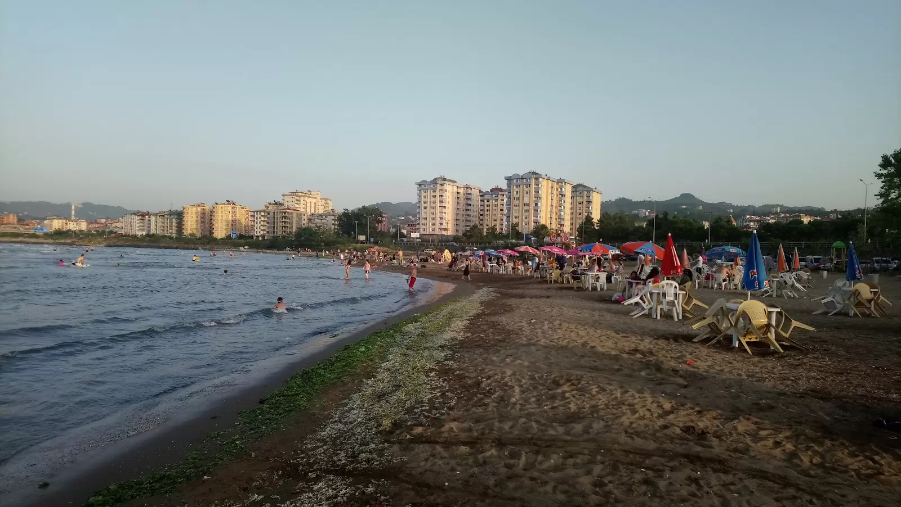
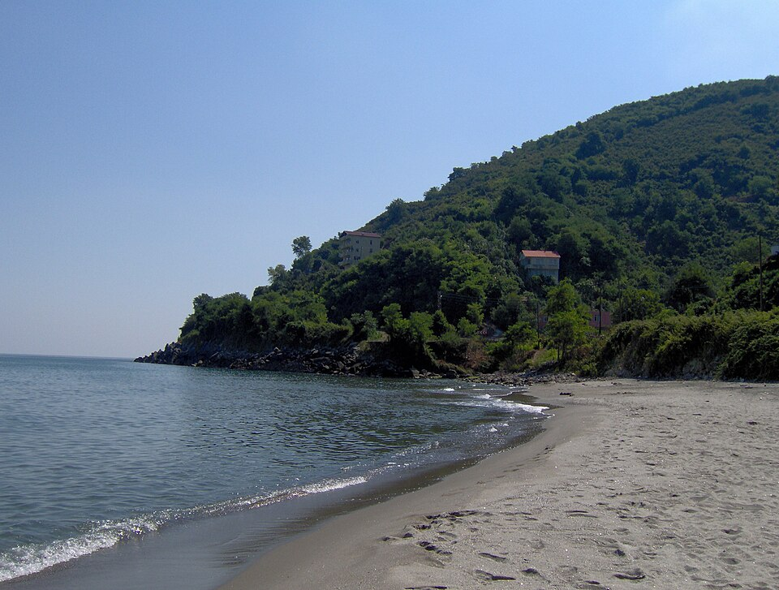
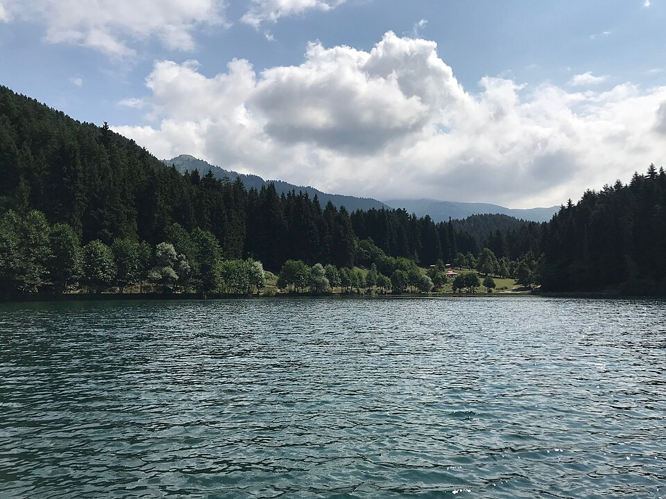

İşlem başarılı!
12 Nokta
Giresun'da Gezilecek Yerler
Resme tıklayarak Google Maps konumu ve 3D Street View görünümüne ulaşabilirsiniz.
Bu kategoride yer bulunamadı.

TarihiKale
Giresun Kalesi
M.Ö. 4. yüzyıldan kalma bu antik kale, Karadeniz'in nefes kesen panoramasını sunar. İçindeki park ve seyir terası ziyaretçilere unutulmaz anlar yaşatır.
Giresun Merkez

AdaAmazon Efsanesi
Giresun Adası
Karadeniz'deki tek Türk adasına tekneyle ulaşılır. Antik tapınak kalıntıları ve yıllık Aksu Festivali ile eşsiz bir kültürel deneyim sunar.
Tekneyle 20 dk

TarihiBizans
Tirebolu Kalesi
Deniz kıyısındaki kayalıklar üzerinde yükselen Bizans dönemi kalesi. Orta Çağ'ın Karadeniz ticaretine hizmet eden tarihi limana gözetlemiştir.
Tirebolu İlçesi

Tarihi1600 m
Şebinkarahisar Kalesi
Dağın tepesinde 1600 m rakımda yükselen görkemli kale. Hitit, Roma, Bizans ve Osmanlı medeniyetlerinin izlerini taşır.
Şebinkarahisar

MüzeArkeoloji
Giresun Müzesi
Eski bir Rum kilisesinin içinde hizmet veren müze. Yörenin arkeolojik ve etnografik eserlerini titizlikle korur ve sergiler.
Giresun Merkez

Yayla1600 m
Kümbet Yaylası
1600 m rakımında yemyeşil çayırlar. Doğa yürüyüşü, kamp ve yayla festivalleri için mükemmel. Karadeniz manzarası ikram eder.
Merkeze 45 km

Yayla2200 m
Kulakkaya Yaylası
2200 m ile Giresun'un en yüksek yaylalarından biri. Fırtına bulutları, dağ koruları ve kamp alanlarıyla macera tutkunlarını bekler.
Merkeze 80 km

GölMilli Park
Karagöl
1985 m rakımında Karagöl-Sahara Milli Parkı içindeki büyüleyici göl. Sabah sisleriyle büründüğünde masalsı bir atmosfer yaratır.
Yürüyüş parkurlu

Şelale23 m
Batlama Şelalesi
23 metre yüksekliğindeki görkemli şelale. Çevresi piknik alanları ve patikalarla donatılmıştır. İlkbaharda en güzel haline kavuşur.
Merkeze 18 km

PlajSahil
Bulancak Sahili
Uzun ve temiz sahil hattıyla Karadeniz'in mavi sularına açılan Bulancak, hem yaz tatili hem de günübirlik dinlenme için idealdir.
Bulancak İlçesi

PlajŞirin Kasaba
Eynesil Sahili
Sakin ve kalabalıktan uzak kıyı kasabası. Rıhtım boyunca kafeler, Karadeniz manzarası eşliğinde huzurlu vakit geçirme fırsatı sunar.
Eynesil İlçesi

Milli Park2.082 ha
Karagöl-Sahara Milli Parkı
2.082 hektarlık alanda yayılan milli parkta Karagöl, Sahara Gölü ve Dipsiz Göl gibi değerli sulak alanlar birbirini izler. Doğa yürüyüşü cenneti.
Tüm mevsimler açık